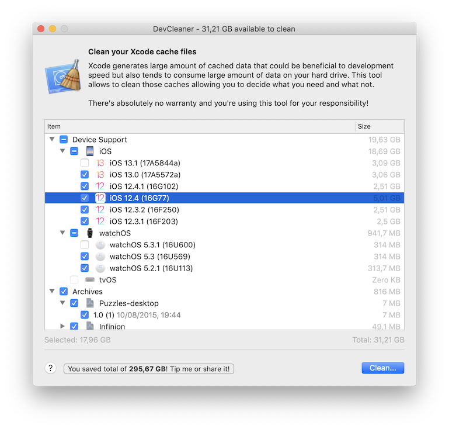
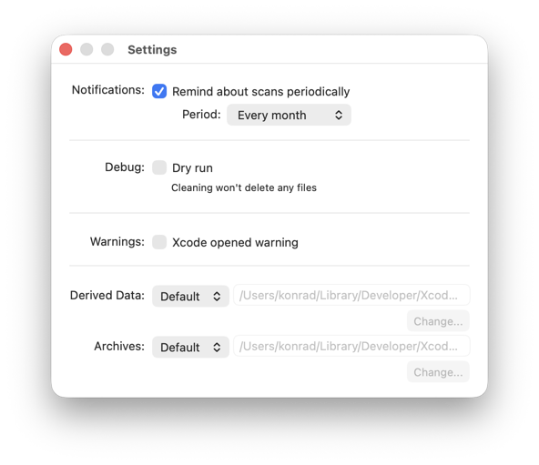
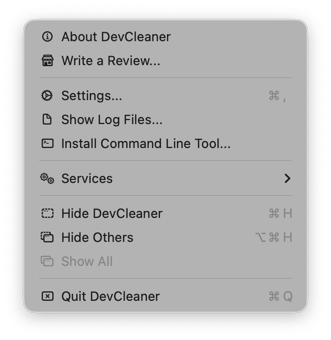
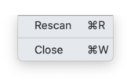

<!DOCTYPE html>
<html>
<head>
    <link rel="stylesheet" type="text/css" href="manual.css">
</head>

<body>
    <div class="header">
        <h2>
            
            DevCleaner for Xcode
        </h2>
        <p class="header.version">2.3.0</p>
    </div>
    
    <div class="content">
        <h3>Overview</h3>
        <p>DevCleaner is a tool that allows you to reclaim tens of gigabytes of your storage used for various Xcode caches.</p>
        <p>Xcode could store massive amount of data in <code>~/Developer</code> folder. Most of those are cached files & symbols are not reclaimed over time and could consume a large amount of your storage, which is especially important if you have relatively small SSD drive.</p>
        <p>DevCleaner gives you an easy way to inspect auto-generated files and clean them if necessary. It could also remind you about scan after a while.</p>
        <p>Please note that <b>this application is relying on internal folder structures and undocumented features</b>. It could stop working with newer versions of Xcode! I tried to make sure this application is safe, but if you want to be sure, please <b>make backup before use it</b>.</p>
        <p>Currently it is tested with Xcode 12.x.</p>
        <p>In case of any issues, please first consult <b>FAQ section at the end of this manual!</b></p>

        <h3>What it cleans?</h3>
        
        <h4>Device Support</h4>
        <p>In order to debug iOS/tvOS/iPadOS/watchOS/macOS devices, Xcode first needs to download debug symbols appropriate to version of OS that we currently use on a device. You may noticed that when connecting a new <b>or updated</b> device when having Xcode opened.</p>
        <p>Those symbols are needed for each of your device and for each of *OS version, after a new update, even a minor one, Xcode needs a new set of symbols. <b>Unfortunately, old symbols are not removed</b> and each of them take 2-5GB of disk space. As you can imagine, they can start to sum up pretty quickly, usually there's 10s of smaller updates in less than a year for each OS.</p>
        <p>DevCleaner helps cleaning those symbols, selecting older ones by default, keeping only those most recent ones. Of course final decision is yours.</p>
        
        <h4>Archives</h4>
        <p>As you write software and making a test or release builds, you probably use <i>Archive</i> option from Xcode. Sometimes you would end-up with a massive amount of archives, from which most of them are useful after a while. They can take various size, from just tens of MBs up to GBs.</p>
        <p>Some archives are more useful than others though. Remember that if you submit your binary to the AppStore and release it, you have access to crashlogs from archives, therefore archives are not selected by default. Archives that was submitted/deployed successfully are marked with &#9989; symbol, those that failed with &#10060;. Archives that weren't submitted nor deployed are not marked by any symbol, they are usually safe to clean.</p>

        <h4>Derived Data</h4>
        <p>When you develop your app, Xcode caches your symbols, dependencies, logs, text - all to develop fast and to keep code completion working. Unfortunately this data tend to take a lot of space, especially for big projects. Also, they're not deleted automatically. This may be especially problematic if you open a lot of various projects.</p>
        <p>Removing derived data is not harmful as Xcode can recreate them when you open project again. Although it's not recommended for projects that you work on often. For this reason nothing is selected by default.</p>
        
        <h4>UI Previews</h4>
        <p>Modern Xcode can preview your UI as you design it. It's especially important and rich with SwiftUI. Unfortunately, UI previews are working based on simulators. If we have a lot of different previews, for different devices, they can quickly sum up to a significant amount of space.</p>
        
        <h4>Old Simulator & Device Logs</h4>
        <p>Each version of Xcode appears to have a new version of database that holds logs from devices & simulators. Those databases are migrated with content of the previous ones. If you use Xcode for a long time, it would accumulate to significant amount of unused data.</p>
        
        <p>It should be safe to check this option, by default all old databses are selected except most recent version of Xcode.</p>
        <p><b>If you have multiple (older) Xcode installations, you probably should deselect those versions too.</b></p>

        <h4>Old Documentation Downloads</h4>
        <p>For some time, recent versions of Xcode are using online help. But if you used Xcode in the past, you may still have documentation downloaded locally to your computer. It could take a lot of space and currently there is no use for it.</p>

        <h3>Main Window</h3>
        <p>This is the main interface of the application, you select here what you want to clean and performing cleaning itself. You can also <b>share or tip me</b> if you want &#128526;</p>

        <picture>
            <source srcset="main-window-dark.png 1x, main-window-dark@2x.png 2x" media="(prefers-color-scheme: dark)">
            
        </picture>

        <h4>Items to Clean</h4>
        <p>Select items you want to clean, you can choose details if you click on arrows. You can see how much space you can recover and how much you selected. Usually you don't want to clean everything, as most probably it will be restored by Xcode on next time you run your current project anyway, and it will take some time. Consult manual to get information what is the purpose of those items.</p>

        <h4>Help Button</h4>
        <p>Displays this help.</p>

        <h4>Tip Button</h4>
        <p>If you think this app helped you somehow, you can consider a small tip, or just share it. I would greatly appreciate it and continue development.</p>

        <h4>Clean Button</h4>
        <p>Click here if you're sure you have everything selected as you wish. If you have "Dry mode" enabled, it won't actually clean anything and a small label will be displayed nearby.</p>

        <h3>Preferences</h3>

        <picture>
            <source srcset="preferences-dark.png 1x, preferences-dark@2x.png 2x" media="(prefers-color-scheme: dark)">
            
        </picture>

        <h4>Notifications</h4>
        <p>You can set notifications to remind you about scans. Available periods: 2 weeks, 1 month, 2 months.</p>

        <h4>Debug</h4>
        <p>You can set "Dry Run" to check what exactly will be performed, without actually deleting any files.</p>

        <h4>Derived Data & Archives Locations</h4>
        <p>If you store those data in a custom location, you can set it here. It should be set to same folders as in "Locations" tab in Xcode "Preferences" window.</p>

        <h3>Application Menu</h3>

        <picture>
            <source srcset="menu-dark.png 1x, menu-dark@2x.png 2x" media="(prefers-color-scheme: dark)">
            
        </picture>

        <h4>Preferences...</h4>
        <p>Opens preferences window.</p>

        <h4>Show Log Files...</h4>
        <p>In case of problems, this will show application log files folder. If you ever will have any issues with the application, those files would help finding the cause. You may be asked to send them.</p>

        <h4>Install Command Line Tool...</h4>
        <p>This will open instructions how to install command line tool.</p>

        <h3>File Menu<h2>
            
        <picture>
            <source srcset="file-dark.png 1x, file-dark@2x.png 2x" media="(prefers-color-scheme: dark)">
            
        </picture>
        
        <h4>Rescan...</h4>
        <p>Rescans all files manually.</p>
        
        <h4>Close</h4>
        <p>Closes active window.</p>
        
        <h3>Command Line Tool</h3>

        <p>You'll find instructions how to install command here: <a href="https://github.com/vashpan/xcode-dev-cleaner/blob/2.0.0/Documentation/Command%20Line%20Tool.md">Command Line Tool</a></p>

        <h4>Usage</h4>
        <p>After installing tool, type <code>dev-cleaner</code> in your preferred terminal. It will show short instructions how to use it:</p>

        <pre>
DevCleaner 2.3.0

OVERVIEW: Reclaims storage that Xcode stores in caches and old files

USAGE: DevCleaner <command> [options]

OPTIONS:

    info
        Show all items available to clean.
    clean <all,device-support,archives,derived-data,previews,old-logs,old-documentation>
        Perform cleaning of given items. Available options: all,device-support,archives,derived-data,old-logs,old-documentation. If you want to clean all, pass "all"
    --help
        Prints this message
        </pre>

        <p>Please note that command line tool doesn't allow to select specific items, it's designed to run mostly in maintanance scripts or CI machines.</p>

        <h3>FAQ</h3>

        <h4>Q: Why I can't see disk space that I freed in Finder or System Info?</h4>
        <p>Since APFS, hard disk free space is not so easy to calculate anymore (due to snapshots, clones and other features of new filesystem), hence small delay in refreshing it. Final space freed could also be different due to those features. Also, make sure you havan't enabled "Dry Mode".</p>

        <h4>Q: How can I support development of the app?</h4>
        <p>You can give me a tip, click on "Tip me or share it!" button. </p>

        <h4>Q: Why do I have to confirm access to my developer folder again?</h4>
        <p>To be honest, I don't know! It's probably a matter how system handles "security scoped bookmarks" that allows to access files outside sandbox. If you know a solution, let me know!</p>
    </div>
    
</body>
</html>
